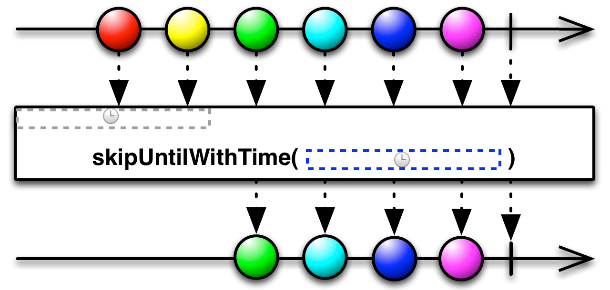

Skip until with time¶
-
Observable.skip_until_with_time(start_time, scheduler)¶ Skips elements from the observable source sequence until the specified start time, using the specified scheduler to run timers. Errors produced by the source sequence are always forwarded to the result sequence, even if the error occurs before the start time.
Examples: res = source.skip_until_with_time(new Date(), [optional scheduler]); res = source.skip_until_with_time(5000, [optional scheduler]);
Keyword arguments: start_time – Time to start taking elements from the source sequence. If
this value is less than or equal to Date(), no elements will be skipped.- scheduler – Scheduler to run the timer on. If not specified, defaults
- to rx.Scheduler.timeout.
Returns {Observable} An observable sequence with the elements skipped until the specified start time.

Under construction...